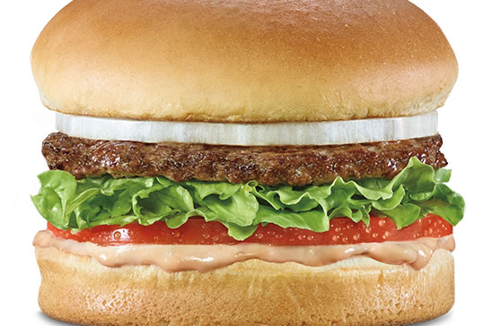
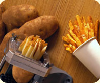

Will’s Grill was founded October 22, 1948. We were founded in St. Louis, Missouri by siblings Will and Alice Grimley. Will's Grill is an American regional chain of fast food restaurants with locations primarily in the American Midwest. Our chain is currently headquartered in Kansas City, Missouri, and has slowly expanded outside Northern Missouri into the rest of Missouri, as well as into Kansas, Iowa, Illinois and Indiana. The current owner is Lynsi Grimley, the Grimley’s only grandchild.

As our chain has expanded, it has opened several distribution centers in addition to its original St. Louis location. The new facilities, located in Witchita, Kansas; Des Moines, Iowa; Chicago, Illinois, and Indianapolis, Indiana will provide for future expansion into other parts of the country.

We have resisted franchising our operations or going public. One reason is the prospect of quality or customer consistency being compromised by excessively rapid business growth. Our company’s business practices have been noted for employee-centered personnel policies. The Will’s Grill restaurant chain has developed a highly loyal customer base, and has been rated as one of the top fast food restaurants in several customer satisfaction surveys.